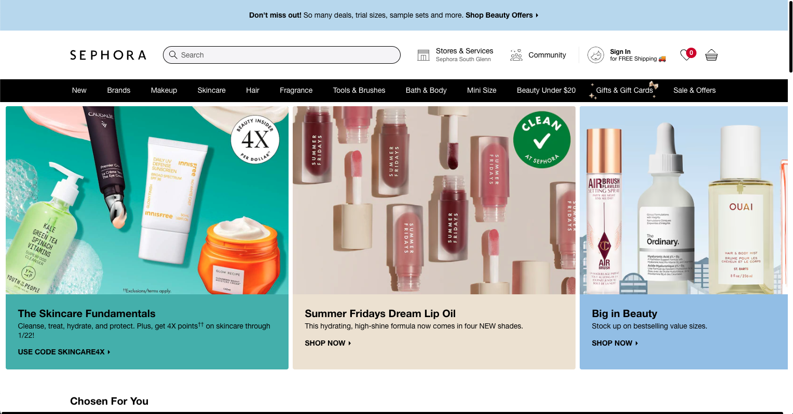
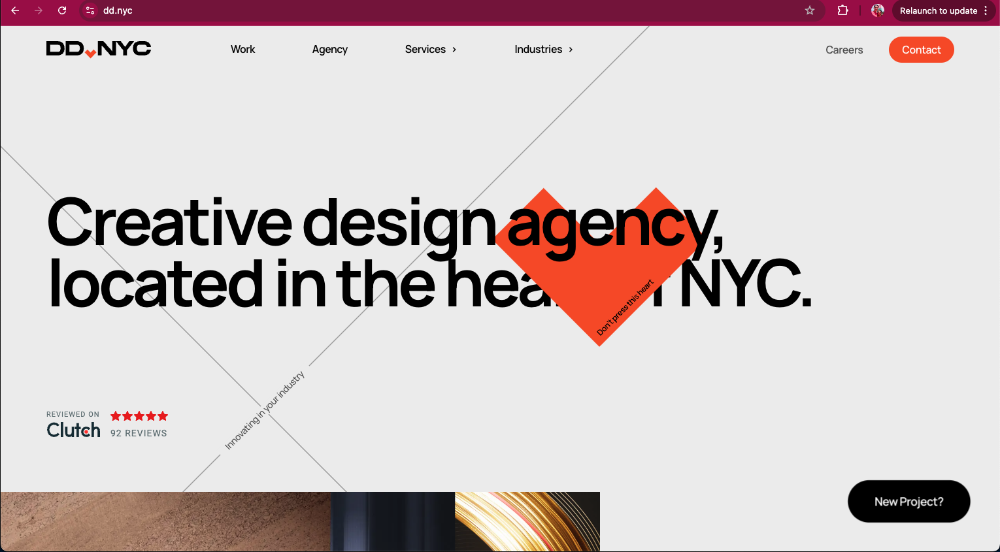

Visual Hierarchy
Sephora

This is the organization of items and elements in a design that guide the viewers eye to fully understand the design.
Sephoras website has done a good job with organizing the page to guide the viewers eyes to certain elements on the page to guide to the most important things. They do this by highlighting these elements with certain colors and place them in center for more attention.
Rule of Thirds
Amazon
This is a design technique that divides an image into 9 equal parts to create balance and guides the viewers eye to points of interest.
Amazon uses the rule of thirds for the layout of their homepage. They use this principle to emphasize certain parts of the website to get the attention of the viewer.
White Space and Design
DD.NYC

“White space” in design refers to empty area on a page and is helpful to create a design that is not cluttered and therefore creating a cleaner design to appear more organized and visually appealing.
DD.NYC has an excellent webpage and they are a great example of having a clean and visually appealing design. They have plenty of white space in their design and it is just enough to make the website look very organized and simple yet elegant.